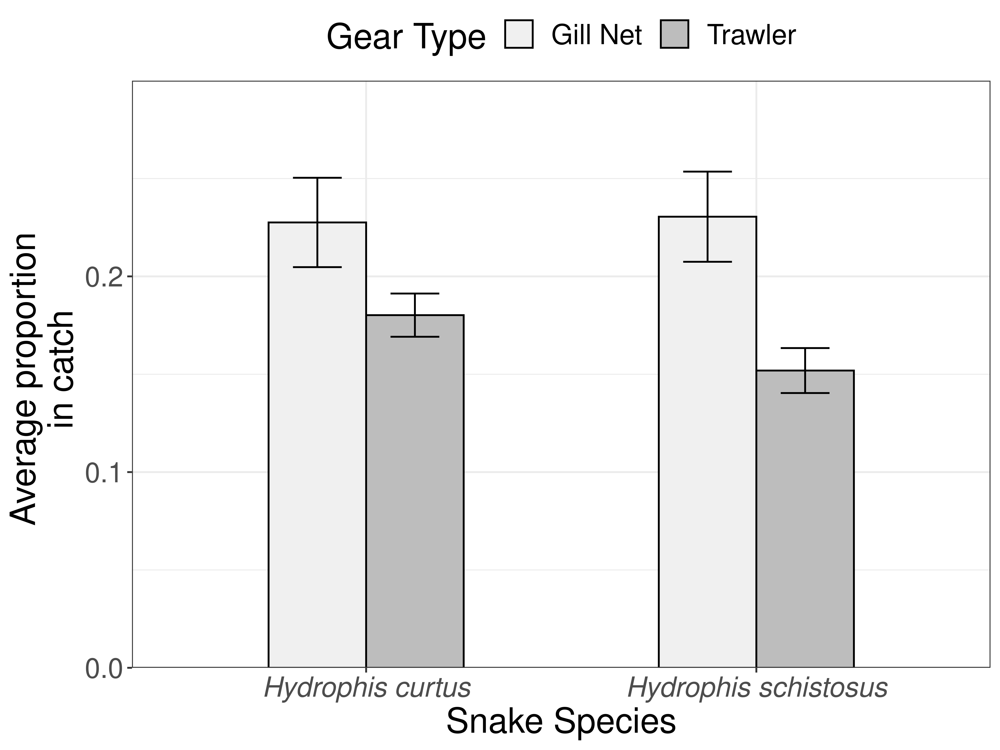
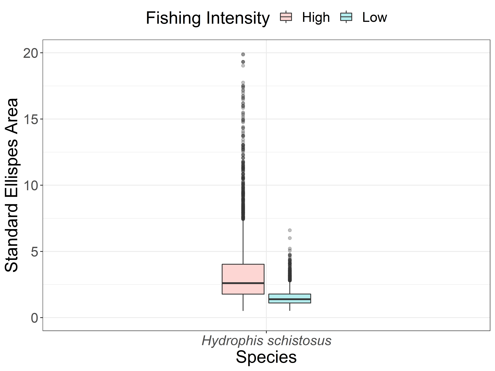

8 Does isotopic niche of sea snakes change with local fishing intensity?
It is infeasible to to find sites with little to no fishing pressure on mainland India. Hence, it is nigh impossible to conduct a study with controls and test sites with varying levels of fishing pressure.
How do you test the niche shift hypotheses with out spatial replicates?
While the control - test study design failed, fishing effort data was collected from multiple vessels (Gillnet and Trawlers) landing at the Malvan harbour over the period of 1.5 years along side diet, abundance (snakes and prey), and isotopic data. So we ask the following questions:
- Is there a corellation between fishing intensity and isotopic ratios?
- Do niche metrics (width, overlap) vary with fishing pressure (high, medium and low preiods during the year)?
What temporal resolution should be used for the analysis?
- Day, week, month or season.
Which is appropriate and why?
Depending on the tissue being analysed. Scales - month, Plasma - week
8.1 Determining cluster of fishing intensity off the coast of sindhudurg
We used hierarchical clustering based on fishing intensity of both gears, and the position of the cell in the grid to divided the grid into high and low fishing intensity zones.
# importing gridded fishing intensity data - see section 5
fi_den <- read.csv("./data/cell_fish_snake.csv")
fi_den <- fi_den%>%
# adding cell id
mutate(id = 1:nrow(fi_den))
# clustering grid cells based on fishing intensity
## selecting relevant variables
fi = fi_den%>%
dplyr::select(id, x, y, GillNet, Trawler)
## creating distance matrix
dist_fi <- dist(fi)
## Hierarchical clustering
clust_fi <- hclust(dist_fi)
## Assigning fishing intensity classes
fi_class <- cutree(clust_fi, 4) ## cutting the tree 4 times
## Naming clasess
fi <- fi%>%
mutate(class = as.factor(ifelse(fi_class == 3 | fi_class == 2 , "High", "Low")))
## Plotting grid
ggplot(fi, aes(x, y, fill = class))+
geom_tile(col = "black")+
scale_fill_brewer(palette = "Set1", name = "Fishing intensity")+
labs(x = "Longitude", y = "Latitude")+
theme(text = element_text(size = 10))
Clustering may need to be revised based on sample size
8.2 Geocoding stable isotope data
Update geocoding code and rerun
# importing stable isotope data
sia = read.csv("./Data/Stable Isotope Data_CEAS_241119.csv")
# joining sia data to snake data
sia_snakes = sia%>%
filter(Tissue.type != "Gut Content")%>%
left_join(snakes, 'Field.Code')%>%
mutate(Lab = "CEAS")%>%
#rename(Delta.Carbon = d13C.vpdb. , Delta.Nitrogen = d15N.N2.air.)%>%
dplyr::select(Date, Field.Code, Species, Snout.to.Vent.cm., Sex, Gravid, Class,
Gear.Type, Fishing.Location, Depth.Caught.m.,
Plasma.Color, Delta.Carbon, Delta.Nitrogen, Lab,
Tissue.type, Month, Year)
## Assigning grid cells to snakes
sia_li <- sia_fi%>%
group_by(Field.Code, Species, Tissue.type, Delta.Carbon, Delta.Nitrogen)%>%
nest()%>%
mutate(cell = map(data, cell.ext),
celldf = map(cell, as.data.frame))%>%
dplyr::select(celldf)%>%
unnest()%>%
inner_join(fi, by = c("x", "y"))
## Saving data to save time
write.csv(sia_li, "./Data/SIA_fishing intensity.csv")8.3 Sample size
# importing geocoded stable isotope data
sia_li <- read.csv("./Data/SIA_fishing intensity.csv")
# adding fishing intensity class
sia_li <- sia_li%>%
inner_join(fi, c("x","y"))
# summarising number of samples
table(sia_li$Species, sia_li$Tissue.type, sia_li$class)%>%
as.data.frame()%>%
spread(Var3, Freq)%>%
rename(Species = Var1,
Tissue = Var2)%>%
arrange(Species, Tissue)| Species | Tissue | High | Low |
|---|---|---|---|
| Hydrophis schistosus | Plasma | 3 | 8 |
| Hydrophis schistosus | Scales | 0 | 12 |
8.4 Variation isotope ratio with fishing intensity
Using only plasma values.
# plotting
sia_li%>%
filter(Tissue.type == "Plasma")%>%
gather(key = Isotope, c(Delta.Carbon, Delta.Nitrogen), value = ratio)%>%
ggplot(aes(intensity, ratio))+
geom_point(size = 3)+
geom_smooth(method = lm)+
labs(x = "Fishing intensity", y = "Isotope ratio")+
theme(legend.text = element_text(face = "italic"))+
facet_wrap(~Isotope, scale = "free_y")
Both \(\delta^{15}N\) and \(\delta^{13}C\) show strong negatice relationship with increasing fishing intensity.
Update with new SI data
8.5 Modeling isotope ratios with fishing intensity
Using only plasma values.
sia_li%>%
filter(Tissue.type == "Plasma")%>%
gather(key = Isotope, c(Delta.Carbon, Delta.Nitrogen), value = ratio)%>%
group_by(Species, Isotope)%>%
nest()%>%
mutate(
mod1 = map(data, ~lm(ratio ~ intensity, data = .)),
summ1 = map(mod1, broom::tidy),
r2 = map(mod1, broom::glance)
)%>%
dplyr::select(summ1, r2)%>%
unnest()%>%
dplyr::select(Species:p.value, adj.r.squared)| Species | Isotope | term | estimate | std.error | statistic | p.value | adj.r.squared |
|---|---|---|---|---|---|---|---|
| Hydrophis schistosus | Delta.Carbon | (Intercept) | -15.4011808 | 0.6232436 | -24.711336 | 0.0000000 | 0.1925198 |
| Hydrophis schistosus | Delta.Carbon | intensity | -0.0119892 | 0.0065172 | -1.839621 | 0.0989712 | 0.1925198 |
| Hydrophis schistosus | Delta.Nitrogen | (Intercept) | 15.7569605 | 0.3712895 | 42.438473 | 0.0000000 | 0.2023267 |
| Hydrophis schistosus | Delta.Nitrogen | intensity | -0.0073013 | 0.0038825 | -1.880548 | 0.0927251 | 0.2023267 |
Samples sizes for H. curtus are low, however, fishing intensity seems to have a significant depletion effect on plasma isotope ratios in H. schistosus.
8.6 Difference in niche width between sea snakes
See section 4 for more details on analysis with SIBER.
# Loading required libraries
library(SIBER)
#Creating siber data
siber_fi = sia_li%>%
filter(Tissue.type == "Plasma")%>% # using plasma values for comparison
dplyr::select(Delta.Carbon, Delta.Nitrogen, Species, class)%>%
# renaming baed on SIBER conventions
rename(iso1 = Delta.Carbon,
iso2 = Delta.Nitrogen,
group = class, # setting fishing intesnity as group
community = Species)%>%
# removing missing data
filter(!is.na(group),
!is.na(iso1),
!is.na(iso2),
community == "Hydrophis schistosus" | community == "Hydrophis curtus")%>%
ungroup()%>%
dplyr::select(iso1, iso2, group, community)%>%
droplevels()
# Creating SIBER object fo MVN fitting
siber.snakes.fi = createSiberObject(as.data.frame(siber_fi))8.6.1 Maximum likelihood estimate of SEA
| TA | SEA | SEAc | |
|---|---|---|---|
| Hydrophis schistosus.Low | 2.1424 | 1.234995 | 1.440828 |
| Hydrophis schistosus.High | 1.2033 | 2.182545 | 4.365089 |
As maximum likelihood can only porivde point estimates of SEA, a bayesian model was used to provide more robust comparison of niche width.
8.6.2 Bayesian estimate of SEA
# options for running jags
parms <- list()
parms$n.iter <- 2 * 10^4 # number of iterations to run the model for
parms$n.burnin <- 1 * 10^3 # discard the first set of values
parms$n.thin <- 10 # thin the posterior by this many
parms$n.chains <- 2 # run this many chains
# define the priors
priors <- list()
priors$R <- 1 * diag(2)
priors$k <- 2
priors$tau.mu <- 1.0E-3
snakes.fi.post <- siberMVN(siber.snakes.fi,
parms, priors)#fitting multivariate normal model and getting posteriors
SEA.B_snakes.fi <- siberEllipses(snakes.fi.post)#estimating standard ellipse area from posteriors
means.B_snakes.fi <- extractPosteriorMeans(siber.snakes.fi, snakes.fi.post)#mean isotope values
ccc <- names(snakes.fi.post)
colnames(SEA.B_snakes.fi) <- ccc
SEA.B_snakes.fi.df = data.frame(SEA.B_snakes.fi, check.names = F)%>%
rowid_to_column(var = "run")%>%
gather(Species.class, SEA.B, -run)%>%
separate(Species.class, c("Species","FI.Class"), sep = "([\\.\\?\\:])")#Summarising SEA estimates
SEA.B_snakes.fi.df%>%
group_by(Species, FI.Class)%>%
summarise(SEA.mean = mean(SEA.B),
SEA.sd = sd(SEA.B),
SEA.se = sd(SEA.B)/sqrt(n()))| Species | FI.Class | SEA.mean | SEA.sd | SEA.se |
|---|---|---|---|---|
| Hydrophis schistosus | High | 3.516156 | 3.249581 | 0.0513804 |
| Hydrophis schistosus | Low | 1.523470 | 0.609967 | 0.0096444 |
8.6.3 Testing difference in species niche area by fishing intensity
SEA.B_snakes.fi.df%>%
spread(key = FI.Class, value = SEA.B)%>%
group_by(Species)%>%
summarise(`P(High > Low)` = sum(`High` > `Low`)/n())| Species | P(High > Low) |
|---|---|
| Hydrophis schistosus | 0.8265 |
8.7 Visualising difference in niche width across gradiet of fishing intensity
SEA.B_snakes.fi.df%>%
ggplot(aes(Species, SEA.B, fill = FI.Class))+
geom_boxplot(alpha = 0.3, width = 0.25)+
scale_y_continuous(limits = c(0,20), name = "Standard Ellispes Area")+
scale_fill_discrete(name = "Fishing Intensity")+
theme(axis.text.x = element_text(face = "italic"))